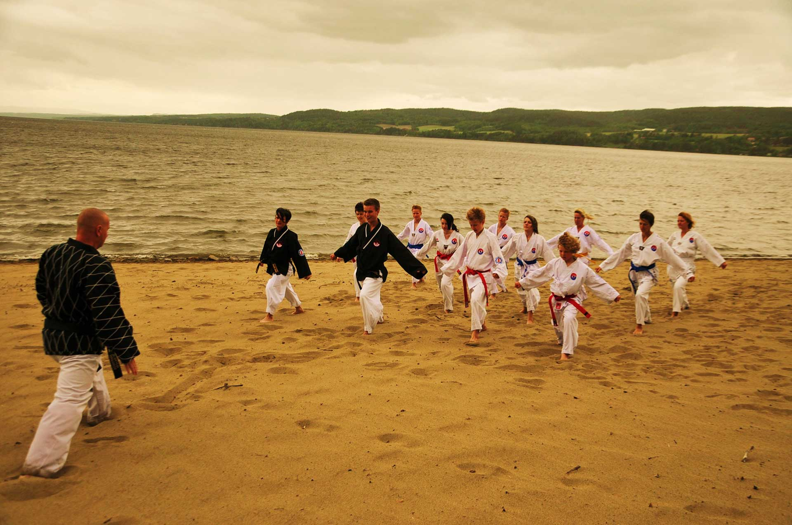

Arrangement
Grandmaster Cho's Barnefestival

Grandmaster Cho Summerfestival starter med Barnefestival - en treninghelg for barn mellom 7 og 14 år.
Her vil barna få all fokus fra instruktører og ledere. Klubbene tar selv med ledsagere/foreldre.
Sommerfestivalen starter mandag, men selvsagt er hele familien velkommen som vanlig. Vi har fokus på trening i trygge omgivelser, men det er masse plass til hygge og sosialt også. Vi vil dra på stranden for å trene/bade og vi har koreansk grilling.